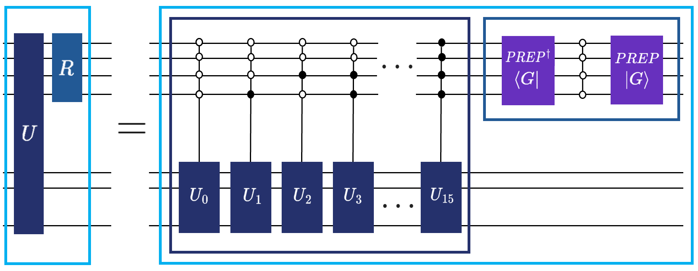
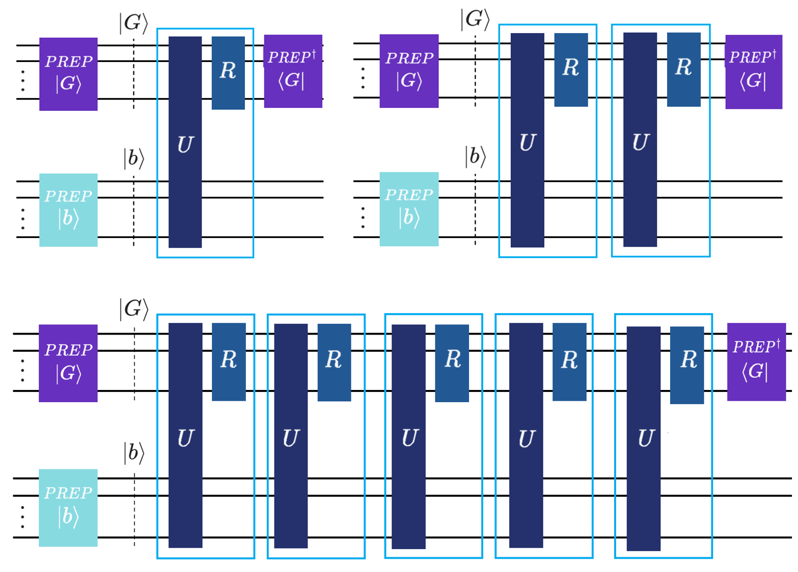
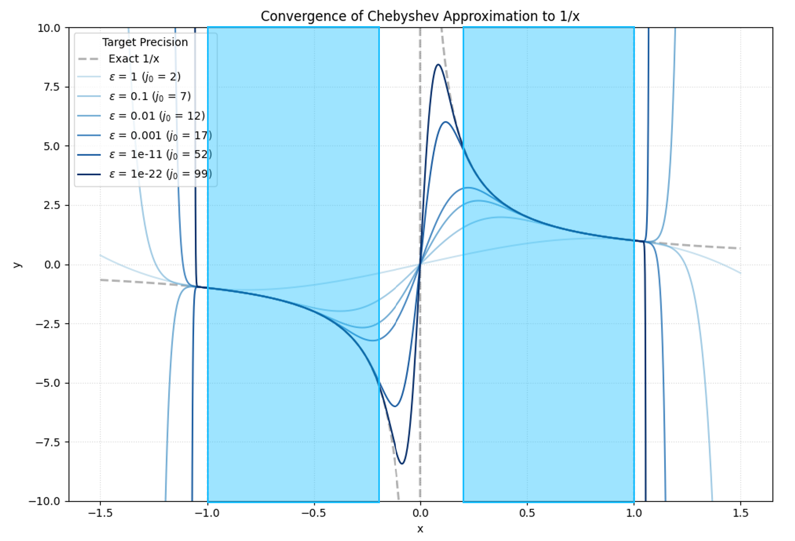
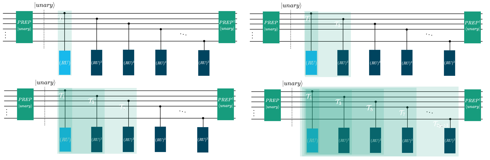
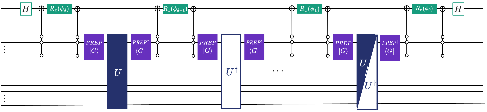
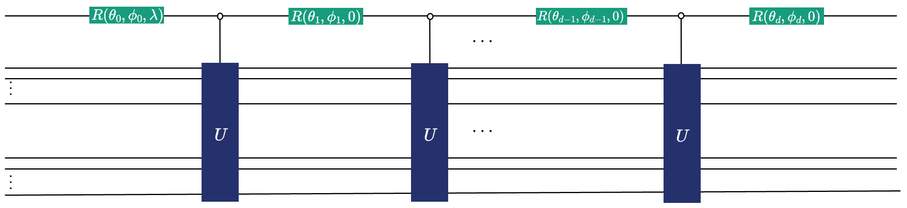

BlockEncoding class 201: Qubitization, Chebyshev polynomials, QSP#
Welcome back to the tutorial on Quantum Linear Algebra. In the previous tutorial, we learned how to “embed” a non-unitary matrix \(A\) in the top left block of a larger unitary \(U\) using the BlockEncoding class. But just having \(A\) block encoded usually isn’t enough.
Often, we want to compute functions of that matrix; like \(e^{-iAt}\) for simulating dynamics (Hamiltonians), or \(A^{-1}\) for solving linear systems, or even applying step functions or Gaussian functions as a filter for ground-state preparation.
Classically, to evaluate a complex function \(f(x)\), we often approximate \(f\) using a polynomial, such as a Taylor series or Chebyshev expansion over a specific domain. In quantum computing, we can perform a similar functional transformation using Quantum Signal Processing (QSP), which allows us to apply polynomial transformations to the eigenvalues of a quantum operator. We will cover QSP toward the end of this tutorial. To get there, we first need to learn how to use the BlockEncoding class to transform an operator into a “Quantum Walk” via Qubitization.
After learning about Qubitization, this tutorial will also explain how to block-encode Chebyshev polynomials and why they are useful. Namely, we’ll cover the quantum Lanczos method, a technique that uses the Krylov subspace (built from Chebyshev polynomials) to estimate the ground state energy of a Hamiltonian without needing complex time-evolution. We will also cover the Childs-Kothari-Somma (CKS) algorithm, which is a near-optimal linear system solver that uses block encoded Chebyshev polynomials in another layer of LCU, this time with a neat trick (spoiler alert, it’s unary encoding).
We will then show how to run the algorithms stemming from generalized QSP in Qrisp, and how the BlockEncoding class makes polynomial transformations, solving linear systems, and Hamiltonian simulation as simple as calling .poly(coeffs), .inv(eps, kappa), and .sim(t, N) methods respectively.
Here’s a summary:
Method |
Purpose |
Mathematical Basis |
|---|---|---|
Encodes \(A\) into a “walk operator” \(W\) |
||
Computes the \(k\)-th Chebyshev polynomial \(T_k(A)\) |
Iterative application of \(W^k\) |
|
Applies an arbitrary polynomial transformation \(P(A)\) |
||
Solves the linear system \(Ax = b\) |
GQSP, \(1/x\) Chebyshev approximation |
|
Simulates Hamiltonian evolution \(e^{-iHt}\) |
GQSP, Jacobi-Anger expansion (Bessel functions) |
But first things first. Let’s break down the concept called qubitization.
Qubitization#
If a Block Encoding is a “static snapshot” of a matrix \(A\), Qubitization is what makes it “move”. Technically, Qubitization is a method to transform an \((\alpha, m, \epsilon)\)-block-encoding of a matrix \(A\) into a special unitary operator \(W\), often referred to as the “walk operator”. This operator has a nice property: it maps the eigenvalues \(\lambda\) of \(A\) to the eigenvalues \(e^{\pm i \arccos(\lambda/\alpha)}\) in a set of two-dimensional invariant subspaces.
Given a Hermitian matrix \(H\) and its block-encoding \((U, G)\), where \(G\ket{0} = \ket{G}\), we use the definition of the reflection operator \(R\) acting on the ancilla space as \(R = (2\ket{G}\bra{G}_a \otimes \mathbb{I}_a)\otimes \mathbb{I}_{s}\) from Lemma 1 in Exact and efficient Lanczos method on a quantum computer. To “qubitize” the encoding, we interleave the SELECT operator with this reflection. The Qubitized Walk Operator \(W\) is defined as \(W = R\cdot U\).
Rigorous analysis (see Lin Lin, Chapter 8) shows that if \(\ket{\psi_\lambda}\) is an eigenvector of \(H/\alpha\) with eigenvalue \(\lambda \in [-1, 1]\), the walk operator \(W\) doesn’t wander through the whole Hilbert space. Instead, it acts on an invariant 2D subspace spanned by the “ideal” state \(\ket{G}\ket{\psi_\lambda}\) and an orthogonal state. Within this subspace, the eigenvalues of \(W\) are \(\mu_\pm = \lambda \pm i\sqrt{1-\lambda^2} = e^{\pm i \arccos(\lambda)}\). Essentially, Qubitization “lifts” the eigenvalues of our matrix onto the unit circle in the complex plane, allowing us to manipulate them using phase rotations.
This seems like a mouthful, but in order for this tutorial to cater to both developers coming from the classical domain, and researchers in quantum computing, it’s the “necessary evil”. To make it up to you, we’re going to show how in Qrisp, you don’t need to build these reflections manually. But first, some visual aid so that you see that it’s not as complex as it sounds.

In the previous tutorial you’ve already learned how we use the \(\text{SELECT}\) by just calling q_switch. Well, what if we told you that performing the reflection operation above you can just use the reflection function? And by combining the two you can easily define the qubitization walk operator? Yup, that’s the cool thing about modular software development approach Qrisp is taking with its focus on high-level abstractions. Let’s get to coding!
Qubitization in Qrisp as .qubitization()#
While understanding the internal mechanics of q_switch and reflection is valuable for intuition, Qrisp abstracts this complexity away for standard operations. The BlockEncoding class features a dedicated method, .qubitization(), which automatically constructs the walk operator \(W\) from your input matrix. This method handles the heavy lifting: it identifies the necessary reflection operators \(R\) and interleaves them with the signal oracle (the block-encoding unitary \(U\)). If the original block-encoding unitary \(U\) isn’t Hermitian (i.e., \(U^2 \neq \mathbb{1}\)), Qrisp automatically handles the Hermitian embedding by often requiring one additional ancilla qubit. This is the cost of ensuring the walk operator remains unitary.
Here is how you can transform a Hamiltonian into its qubitized walk operator in just a few lines:
[1]:
from qrisp.block_encodings import BlockEncoding
from qrisp.operators import X, Y, Z
# 1. Define a Hamiltonian
# We create a simple Hamiltonian H = X_0 Y_1 + 0.5 Z_0 X_1
H = X(0)*Y(1) + 0.5*Z(0)*X(1)
# 2. Create the initial Block Encoding
# This generates the (U, G) pair discussed above
BE = BlockEncoding.from_operator(H)
# 3. Generate the Qubitized Walk Operator
# This automates the construction of W = SELECT * R
BE_walk = BE.qubitization()
The resulting object, BE_walk, is a new BlockEncoding instance representing the walk operator \(W\). A thing to remember from this example is the fact that when you invoke methods of the BlockEncoding class like .qubitization, or later .poly
and .sim, Qrisp qubitizes your BlockEncoding object under the hood, handling the ancilla management and reflection logic for you, abstracting away the need to know how to implement these methods as (trigger warning) circuits.
Crucially, the .qubitization() operator is also how one encodes the Chebyshev polynomials of the Hamiltonian, as we’ll learn in the next part of the tutorial.
Block encoding Chebyshev polynomials#
One of the most powerful features of Qubitization is its natural relationship with Chebyshev polynomials of the first kind, \(T_k(x)\), defined as \(T_k(\cos \theta) = \cos(k\theta)\). If we apply the walk operator \(W\) \(k\)-times, the resulting unitary \(W^k\) contains \(T_k(A/\alpha)\) block encoded in the top-left block:
This resembles how we defined our typical block encoding business. To refresh your memory, this is how we have defined block encoding in the previous tutorial:
We just replaced \(U\) with \(W^k\). I’m still in awe about how this holds true - it cannot be this simple, right?! Well, based on the theory backing it, it is. Awesome!
You might notice the term \(A/\alpha\) and wonder where this scaling comes from. In any block encoding, we are embedding a non-unitary matrix \(A\) into a larger unitary \(U\). Since the eigenvalues of a unitary must lie on the unit circle (norm 1), and the spectral norm of our matrix \(A\) might be much larger, we must scale \(A\) down.
In the LCU framework, if \(A = \sum_i \alpha_i U_i\), then \(\alpha = \sum_i |\alpha_i|\). This \(\alpha\) (often called the “subnormalization factor”) ensures that the operator \(\|A/\alpha\| \leq 1\), making it mathematically possible to “fit” inside a quantum circuit.
“But what’s so special about Chebyshev polynomials?”, you might be wondering. As noted in Lin Lin’s lecture notes, Chebyshev polynomials are “optimal” in two senses:
Iterative Efficiency: Because \(W\) is a single unitary, applying \(W^k\) requires only \(k\) queries to the block encoding. This is much cheaper than the \(O(2^n)\) terms often required by naive Taylor series expansions.
Approximation Theory: According to the Chebyshev Equioscillation Theorem, \(T_k(x)\) provides the best uniform approximation to a function over the interval \([-1, 1]\). This ensures that our quantum algorithm achieves the desired precision \(\epsilon\) with the minimum possible quantum resources.
We think that, again, some visual aid is needed. By applying the walk operator \(k\) times, we block encode the \(k\)-th Chebyshev polynomial of the first kind \(T_k\). If you apply \(W^k=(RU)^k\) \(k\) times, you get \(T_k(H)\) block encoded. Do it once, \(k=1\), you get the top left figure. Do it twice (\(k=2\)), you block-encode \(T_2\) (top right figure). Do it \(k=5\) times… yup, you guessed it (bottom figure):

Just as with the basic walk operator, Qrisp abstracts the iterative application of \(W\) into a simple method call. The BlockEncoding class provides a .chebyshev(k) method, which returns a new block encoding for the \(k\)-th Chebyshev polynomial \(T_k\). This handles the construction of \(W^k\) (or the appropriate sequence of reflections and select/q_switch operators) internally.
Here is how to generate and apply a Chebyshev polynomial transformation to a Hamiltonian:
[2]:
from qrisp import *
from qrisp.block_encodings import BlockEncoding
from qrisp.operators import X, Y, Z
# 1. Define the Hamiltonian
H = X(0)*X(1) + 0.5*Z(0)*Z(1)
# 2. Create the initial Block Encoding
BE = BlockEncoding.from_operator(H)
# 3. Create the Block Encoding for T_2(H)
# This generates the circuit for the 2nd order Chebyshev polynomial
BE_cheb_2 = BE.chebyshev(k=2)
# 4. Use the new Block Encoding
# For example, applying it via Repeat-Until-Success (RUS) to a state
def operand_prep():
# Prepare an initial state, e.g., uniform superposition on 2 qubits
qv = QuantumFloat(2)
h(qv)
return qv
@terminal_sampling
def main(BE):
# Apply the block encoded operator T_2(H) to the state
qv = BE.apply_rus(operand_prep)()
return qv
# Execute
result = main(BE_cheb_2)
print(result)
{0.0: 0.4900000153295707, 3.0: 0.48999992592259706, 1.0: 0.010000029373916136, 2.0: 0.010000029373916136}
The .chebyshev(k) method is particularly useful for building polynomial approximations where \(T_k\) terms are the basis functions. By default (rescale=True), it returns a block-encoding of \(T_k(H)\), managing the normalization factors via Quantum Eigenvalue Transformation (QET) logic. If you need the raw polynomial \(T_k(H/\alpha)\) relative to the block-encoding’s normalization \(\alpha\), you can set
rescale=False.
As learned in the previous tutorial you can also perform resource analysis by just calling the .resources() method.
[3]:
qv = operand_prep()
cheb_resources = BE_cheb_2.resources(qv)
print(cheb_resources)
{'gate counts': {'cx': 12, 'gphase': 4, 'u3': 4, 'rx': 2, 'p': 2, 'cz': 6, 'x': 8}, 'depth': 33, 'qubits': 5}
Let’s, at this point, also show how we could do a quick benchmark of the scaling of resources needed. Since the walk operator \(W=(RU)\) is exactly the block encoding overhead for Chebyshev polynomials, we can see how the resources scale with repeated applications of them to block-encode \(T_k\).
[4]:
for k in range(1, 5):
qv = operand_prep()
# Generate the k-th Chebyshev Block Encoding
# We use rescale=False to look at the raw complexity of the walk operator iterations
BE_cheb = BE.chebyshev(k, rescale=False)
# Extract resource dictionary
cheb_resources = BE_cheb.resources(qv)
print(f"k = {k}: {cheb_resources}")
k = 1: {'gate counts': {'cx': 4, 'x': 5, 'gphase': 3, 'u3': 2, 'z': 1, 'cz': 2}, 'depth': 16, 'qubits': 4}
k = 2: {'gate counts': {'cx': 8, 'x': 10, 'gphase': 6, 'u3': 4, 'z': 2, 'cz': 4}, 'depth': 32, 'qubits': 4}
k = 3: {'gate counts': {'cx': 12, 'x': 15, 'gphase': 9, 'u3': 6, 'z': 3, 'cz': 6}, 'depth': 48, 'qubits': 4}
k = 4: {'gate counts': {'cx': 16, 'x': 20, 'gphase': 12, 'u3': 8, 'z': 4, 'cz': 8}, 'depth': 64, 'qubits': 4}
If you look at the printed output of your benchmark, you’ll notice a very satisfying trend: the gate counts and depth grow linearly with \(k\), the amount of qubits required stays the same.
In the classical world, high-order polynomial approximations often come with a heavy computational tax. On a quantum computer, thanks to Qubitization, the \(k\)-th Chebyshev polynomial \(T_k\) is implemented simply by repeating the walk operator \(W\) exactly \(k\) times. This efficiency is the “secret sauce” behind many modern quantum algorithms. We, therefore, get high-precision approximations without the exponential gate-count explosion.
Quantum Lanczos method#
The ability to efficiently block-encode Chebyshev polynomials isn’t just a mathematical flex; it’s a prerequisite for one of the most exciting algorithms in recent years: the Quantum Lanczos Method, an algorithm that redefines how we study quantum systems.
Typically, if we want to find the ground state energy or spectral properties of a Hamiltonian, we might reach for Quantum Phase Estimation (QPE). However, QPE requires long-time Hamiltonian simulation (real-time evolution), which can be extremely expensive in terms of circuit depth.
As detailed in the paper Exact and efficient Lanczos method on a quantum computer, we can use Chebyshev polynomials to achieve similar goals more efficiently. Instead of evolving the system in time, we use these polynomials to construct a Krylov subspace. This allows us to “scan” the spectrum of a Hamiltonian by building the subspace through simple repetitions of the walk operator, rather than complex time-evolution gates.
To put it in a more digestible way, the Lanczos method projects the Hamiltonian into a much smaller, manageable subspace. We construct a projected Hamiltonian matrix \(\mathbf{H}\) and an overlap matrix \(\mathbf{S}\) within this subspace. The matrix elements are defined as:
Using the product identities of Chebyshev polynomials, these can be broken down into linear combinations of simple expectation values \(\braket{T_k(H)}_0\). For detail on how these expectation values are measured, see the Qrisp Lanczos algorithm documentation.
By diagonalizing these small matrices classically, we can find the ground state energy with far less quantum “effort” than traditional dynamics-based methods.
If you’re wondering why you should care, this allows for highly accurate Ground State Preparation! By solving the generalized eigenvalue problem \(\mathbf{H}\vec{v}=\epsilon \mathbf{S}\vec{v}\) classically, we can find the lowest eigenvalue (the ground state energy) and the corresponding state with far fewer resources than traditional Phase Estimation.
In Qrisp, the lanczos_alg function automates this entire pipeline: measuring the expectation values via Qubitization, building the matrices, regularizing them to handle noise, and solving the eigenvalue problem.
Here is an example estimating the ground state energy of a 1D Heisenberg model. We use a tensor product of singlets as our initial guess \(\ket{\psi_0}\) to ensure a good overlap with the true ground state.
[5]:
from qrisp import QuantumVariable
from qrisp.algorithms.lanczos import lanczos_alg
from qrisp.operators import X, Y, Z
from qrisp.vqe.problems.heisenberg import create_heisenberg_init_function
from qrisp.jasp import jaspify
import networkx as nx
# 1. Define a 1D Heisenberg model on 6 qubits
L = 6
G = nx.cycle_graph(L)
# H = sum (X_i X_j + Y_i Y_j + 0.5 Z_i Z_j)
H = (1/4)*sum((X(i)*X(j) + Y(i)*Y(j) + 0.5*Z(i)*Z(j)) for i,j in G.edges())
# 2. Prepare initial state function (tensor product of singlets)
# This acts as our |psi_0>
M = nx.maximal_matching(G)
U_singlet = create_heisenberg_init_function(M)
def operand_prep():
qv = QuantumVariable(H.find_minimal_qubit_amount())
U_singlet(qv)
return qv
# 3. Run the Quantum Lanczos Algorithm
# D is the Krylov space dimension
D = 6
# We use jaspify for high-performance JIT compilation/tracing
@jaspify(terminal_sampling=True)
def main():
# lanczos_alg handles the block encoding, measurements, and diagonalization
return lanczos_alg(H, D, operand_prep, show_info=True)
energy, info = main()
print(f"Ground state energy estimate: {energy}")
# 4. Compare with exact classical diagonalization
print(f"Exact Ground state energy: {H.ground_state_energy()}")
Ground state energy estimate: -2.3669872085929753
Exact Ground state energy: -2.3680339887499047
Childs-Kothari-Somma algorithm#
Before we jump into arbitrary polynomials, there is one specific application of Chebyshev polynomials combined with Linear Combination of Unitaries (LCU) that deserves its own spotlight: The Childs-Kothari-Somma (CKS) algorithm.
The CKS algorithm solves the Quantum Linear System Problem (QLSP) \(A\vec{x} = \vec{b}\). “Why even approximate \(1/x\) to find \(A^{-1}\)?!”.
To apply the inverse matrix \(A^{-1}\), we simply need to invert these eigenvalues:
Therefore, the challenge of finding a quantum operator that applies a matrix inverse boils down to applying the scalar function \(f(x) = 1/x\) to the eigenvalues of \(A\).
Because quantum circuits can efficiently implement polynomial transformations, the CKS algorithm achieves this by approximating the function \(f(x) = 1/x\) using a linear combination of Chebyshev polynomials. Assuming the matrix \(A\) is scaled so that its eigenvalues fall within the domain \(D_{\kappa} = [-1, -1/\kappa] \cup [1/\kappa, 1]\) (where \(\kappa\) is the condition number), the approximation is targeted precisely over this region.
Visually, this is represented by the domains highlighted in light blue in the following figure:

The algorithm constructs a block-encoding of the inverse operator:
where \(\alpha_j\) are carefully calculated coefficients. The more the terms, the better the approximation, as seen above, where the truncation order \(j_0\) is mentioned next to the corresponding precision \(\epsilon\).
For the visual learners, here is the circuit schematic for this underlying implementation (you can simply call, as seen in the example below, with the CKS function).

The unary encoding trick is a neat one, that’s for sure. It constructs a unary state (instead of the usual \(\text{PREP}\) in binary encoding that we use in usual LCU). By restructuring the superposition into a unary format, it bypasses the need for complex multi-controlled operations, such as our qrispy q_switch, and instead relies entirely on single-qubit controls.
Mathematically, the prepared state takes the following form:
The key to this decomposition is its cumulative “thermometer” structure. Each sequential state, \(\ket{1^m 0^{N-m}}\), adds exactly one contiguous \(\ket{1}\) from left to right. Because these \(\ket{1}\) are cumulative, the system does not need to decode a binary string to know which unitary to apply. Instead, the state of the \(m\)-th ancillary qubit alone acts as a single control trigger for its corresponding unitary segment.
We handle the alternating negative signs of the coefficients \(\alpha_k\) simply by applying \(Z\) gates to the respective outer ancillary qubits. Once this superposition is prepared, the unitaries are activated sequentially based on the presence of \(\ket{1}\):
\(k=1\): The state \(\ket{100\dots00}\) (corresponding to \(\alpha_1\)) activates only the first unitary, \(T_1(A)\) (top left in figure below).
\(k=3\): The state \(\ket{110\dots00}\) (corresponding to \(\alpha_3\)) leaves the first qubit activated and adds the second, activating \(T_3(A)\) (top right in figure below).
\(k=5\): The state \(\ket{111\dots00}\) continues the sequence (bottom left in figure below).
\(k=2j_0+1\): This cascades down to the final state \(\ket{111\dots11}\), where \(j_0\) is the truncation order from the original CKS paper. In this state, all \((RU)^k\) segments are sequentially applied (bottom figure below).
Here is the “figure below” promised above:

Since the first \((RU)\) is always triggered, we can basically remove the control on that one. The Qrisp implementation does just that.
“But wait!”, you might think. “I know another, more famous algorithm for solving linear systems under the name HHL. Why use CKS over that algorithm?”
Precision. The complexity of CKS scales as \(\mathcal{O}(\text{polylog}(1/\epsilon))\), representing an exponentially better precision scaling compared to HHL. This makes it feasible to get high-accuracy solutions without an explosion in circuit depth. As we will see later, utilizing (foreshadowing again here) QSP/GQSP. You’ll learn about this later, as well as how to use this even more efficient approach, by simply calling the .inv(eps, kappa) method. How sick, right?!
Oh, and \(\epsilon\) here is (as already mentioned) the precision, with \(\kappa\) being the condition number. The higher the \(\kappa\), the more difficult is to solve the linear system. The higher the \(\epsilon\), the more terms in the Chebyshev approximation, resulting in costing more resources.
Time for an example. In Qrisp, the CKS function takes a Block Encoding of matrix \(A\) and returns a new Block Encoding representing \(A^{-1}\). You can then apply this inverted operator to your state \(\ket{b}\) using the Repeat-Until-Success (RUS) protocol. Here is how to solve a 4x4 Hermitian system:
[6]:
import numpy as np
from qrisp import prepare, QuantumFloat
from qrisp.algorithms.cks import CKS
from qrisp.block_encodings import BlockEncoding
from qrisp.jasp import terminal_sampling
# 1. Define the linear system Ax = b
A = np.array([[0.73255474, 0.14516978, -0.14510851, -0.0391581],
[0.14516978, 0.68701415, -0.04929867, -0.00999921],
[-0.14510851, -0.04929867, 0.76587818, -0.03420339],
[-0.0391581, -0.00999921, -0.03420339, 0.58862043]])
b = np.array([0, 1, 1, 1])
# Calculate condition number (needed for the polynomial approximation domain)
kappa = np.linalg.cond(A)
# 2. Define state preparation for vector |b>
def prep_b():
operand = QuantumFloat(2)
prepare(operand, b)
return operand
@terminal_sampling
def main():
# Convert matrix A to a Block Encoding
BA = BlockEncoding.from_array(A)
# Create the Block Encoding for A^-1 using CKS
# This internally calculates coefficients and builds the LCU circuit
BA_inv = CKS(BA, eps=0.01, kappa=kappa)
# Apply A^-1 to |b> using Repeat-Until-Success
x = BA_inv.apply_rus(prep_b)()
return x
# 3. Execute and compare results
res_dict = main()
# Extract amplitudes
amps = np.sqrt([res_dict.get(i, 0) for i in range(len(b))])
print("QUANTUM SIMULATION\n", amps)
# Calculate classical solution for verification
c = (np.linalg.inv(A) @ b) / np.linalg.norm(np.linalg.inv(A) @ b)
print("CLASSICAL SOLUTION\n", c)
QUANTUM SIMULATION
[0.02711482 0.55709842 0.5303515 0.63846176]
CLASSICAL SOLUTION
[0.02944539 0.55423278 0.53013239 0.64102936]
Feel free to experiment with the precision and use .resources to see how it impacts gate counts and depth, which is a direct consequence of approximating the inverse with a higher-degree Chebyshev polynomial \(T_k\). We also encourage you to try the ‘custom block encoding’ for the Laplacian operator from the previous tutorial; as noted in BlockEncoding 101, the .from_lcu approach is significantly more efficient. In fact, we really urge you to try it now! The Laplacian is a genuinely relevant sparse matrix where quantum speedups can be really “felt” since it’s used in applications ranging from fluid dynamics to Quantum Support Vector Machines in quantum machine learning (proving there’s substance behind the hype, after all!).
Actually, let’s just get the resources right now, why shouldn’t we, it’s easy!
[7]:
BA = BlockEncoding.from_array(A)
BE_CKS = CKS(BA, 0.01, kappa)
BE_CKS.resources(QuantumFloat(2))
[7]:
{'gate counts': {'cx': 3515,
't_dg': 1548,
'gphase': 50,
'ry': 2,
's_dg': 70,
't': 1173,
'u3': 750,
'z': 12,
'p': 193,
'cz': 150,
'h': 890,
'cy': 50,
'x': 377,
's': 70},
'depth': 5134,
'qubits': 23}
As we see, the gate counts and depth are over the roof! This is expected, though since CKS will likely provide an advantage for sparse matrices (with efficient block-encodings), the one we just performed the inversion one is, in fact, dense. We’ll retry this example and resource estimation for a sparse matrix a bit further below when comparing the performance to the .inv(epsilon, kappa), so stay tuned!
While Chebyshev polynomials are the “optimal” choice for many tasks, they are still just one type of polynomial. What if you want to implement a step function to filter states? Or an inverse function \(1/x\) for solving linear systems of equations? Or a complex exponential \(e^{-ixt}\) for Hamiltonian simulation?
To do that, we need a more generalized framework that treats the walk operator not just as a repeating block, but as a tunable sequence. This brings us to the “Grand Unified Theory” of quantum algorithms: Quantum Signal Processing (QSP).
In the next section (after learning about solving linear systems with the Childs-Kothari-Somma algorithm and how to do it as .inv(eps, kappa)), we’ll see how Qrisp takes everything we’ve learned about block encodings and qubitization to let you implement an arbitrary polynomial transformation by simply calling .poly().
Quantum Signal Processing (QSP)#
While LCU and Qubitization allows us to block-encode operators and Chebyshev polynomials \(T_k\); the latter by simply repeating a walk operator \(W=RU\), Quantum Signal Processing (QSP) provides a way to implement nearly any arbitrary polynomial transformations \(P(A)\). You might wonder: “Why go through the trouble of encoding a number \(x\) into an operator just to evaluate a polynomial? A calculator can do that.”.
The power of QSP lies in the fact that \(x\) actually represents the eigenvalues of a large, block-encoded operator \(A\). By finding a way to transform the scalar \(x\), we can simultaneously apply that same transformation to the entire operator \(A \rightarrow P(A)\), a task that is computationally impossible for a classical calculator when \(A\) is a \(2^n \times 2^n\) matrix.
At its core, QSP manipulates a single-qubit “signal” using a sequence of rotations. If we have \(2\times 2\) signal operator \(W(x)\) that encodes some value \(x \in [-1, 1]\), we interleave it with a series of phase shifts \(e^{i\phi_j Z}\), the resulting product of unitaries can be written as:
To address a common point of confusion: a block encoding is formally defined as a tuple \((\alpha, m, \epsilon)\) associated with a unitary \(U\). QSP provides a recipe to take an initial block encoding of an operator \(A\) and transform it.
Specifically, by choosing the phase angles \(\{\phi_0, \phi_1, \dots, \phi_d\}\) correctly, the resulting unitary \(U_\Phi\) becomes a new block encoding. In this new encoding, the matrix occupying the top-left block is no longer \(A/\alpha\), but rather a polynomial \(P(A/\alpha)\). In other words, applying QSP to a block encoding returns a new block encoding representing the polynomial of the underlying operator.
Through a clever choice of the phase angles \(\{\phi_0, \phi_1, \dots, \phi_d\}\), the block-encoding (top left block) of this unitary becomes a polynomial \(P(x)\). When we “lift” this logic from a single qubit to a full quantum variable this 1-qubit rotation sequence effectively applies the polynomial \(P\) to every eigenvalue of your Hamiltonian or matrix at once.
The Fundamental Theorem of QSP states that there exists a set of phase angles \(\{\phi_0, \dots, \phi_d\}\) such that the top-left block of \(U_\Phi\) corresponds to a polynomial \(P(A/\alpha)\) where:
\(\text{deg}(P) \leq d\)
\(P\) has parity \(d \pmod 2\) (it is either purely even or purely odd), and
\(|P(x)| \leq 1\) for all \(x \in [-1, 1]\)
I know, I know, this was quite a lot of theory, but as always, we’re here to make things simple with Qrisp. We have made it possible for you to not even worry worry about the classical math of finding these phase angles! Qrisp includes an internal “angle solver”, which allows you to treat these sophisticated mathematical transformations as simple method calls!
As a final point of emphasis here, the main advantage of QSP lies in its optimality: it can approximate any continuous function to within error \(\epsilon\) using a circuit depth that scales nearly linearly with the complexity of the function, meeting the theoretical lower bounds for quantum query complexity.
Quantum Eigenvalue and Singular Value Transformation#
Building on our discussion of Qubitization and LCU, we can now dive into the Grand Unification of quantum algorithms: Quantum Singular Value Transformation (QSVT). In the context of Lin Lin’s lecture notes, these methods represent the most efficient way to process matrices on a quantum computer by treating a matrix as a BlockEncoding.
QSVT applies a polynomial \(P\) to the singular values of a matrix \(A\) without needing to perform a full Singular Value Decomposition (SVD).
Disclaimer, a bit more maths before showing examples of how to perform this simply and intuitevely as methods of the class we’ve been covering.
Consider a matrix \(A \in \mathbb{C}^{m \times n}\) with \(\|A\| \leq 1\) with SVD of \(A = \sum_{i} \sigma_i \ket{w_i} \bra{v_i}\). If we have a \((\alpha, m, \epsilon)\)-block encoding \(U\), our goal is to construct a new unitary \(U_\Phi\) that implements:
QSVT does this by using Projector-Controlled Phase gates interleaved with the block encoding \(U\). Let \(\Pi = \ket{0}\bra{0}^a \otimes \mathbb{1}\) be the projector onto the subspace where \(A\) lives. The QSVT circuit schematics for a degree-\(d\) polynomial is:
To visualize this, the following circuit schematics can help.

You might be saying to yourself: “The picture is confusing to me. In the formula for \(U_\Phi\) only \(U\) and \(\Pi\) appear, but at no point \(\ket{G}\)?!”. What a great question you brewed there! The answer might suprise you, but it’s mostly the notation used in literature. In the algorithm schematics above we have explicitly shown the \(\ket{G}\) and \(\bra{G}\) parts sandwiching \(U\). In literature, it is often assumed, that these unitaries are collectively labeled as \(U\): \(U\rightarrow (\bra{G}\otimes \mathbb{I})U(\ket{G}\otimes \mathbb{I})\).
As promised above, you don’t even need to care about these angles with our crispy clean implementation. Generalizing QSP is the final piece of this mosaic.
Lifting constraints and generalizing QSP#
While standard QSVT is a milestone, it is limited by the parity constraint. In simpler terms, that the polynomials must be strictly even or odd, and their coefficients be real (I’m sure that was a social media at some point, right?).
Recent advancements (e.g., Motlagh & Wiebe, 2023, Sünderhauf, 2023) have introduced Generalized versions that remove these restrictions.
GQSP (Generalized Quantum Signal Processing): GQSP applies complex polynomials \(P(z)\) to unitaries \(U\). Unlike standard QSP, \(P(z)\) can have indefinite parity (e.g., \(P(z) = z^2 + z + 1\)), enabled by using general \(SU(2)\) rotations in the signal processing stage.
GQET (Generalized Quantum Eigenvalue Transformation): For Hermitian matrices, GQET applies complex polynomials \(P(z)\) to eigenvalues. Unlike standard QET, \(P(z)\) can have indefinite parity (e.g., \(P(z) = z^2 + z + 1\)).
GQSVT (Generalized Quantum Singular Value Transformation): This extends GQET to arbitrary matrices using the generalized framework.
Why does this generalization matter so much? It allows for mixed parity polynomial, resulting in you being to implement functions like \(e^{-iAt}\) directly without splitting them into sine (odd) and cosine (even) components.
Apart from that, finding precise phase factors for standard QSP/QSVT relied on specialized libaries like QSPPACK or pyqsp to handle the underlying numerical optimization. In the Generalized (GQSP) framework, phases can be computed efficiently (see Laneve, Ni et al.) in time \(\mathcal O(d\log(d))\), making it more accessible. (Of course this is already integrated in Qrisp, such that you don’t have to care about these phases.)
The structure of GQSP is shown in the following schematics:

Ok, enough of this, let’s now show how you can use, run, simulate, and provide resource analysis for three GQSP based applications.
GQSP with Qrisp: .poly, .inv, and .sim#
Polynomial transformations: .poly(coeffs)#
In Qrisp, the BlockEncoding class provides the .poly(coeffs) method, which leverages GQET to apply a transformation \(p(A)\) to a Hermitian matrix. You simply provide the coefficients, and Qrisp’s internal “autopilot” handles the phase solving and circuit construction.
Example: Applying a custom polynomial. This example applies \(p(A) = 1 + 2A + A^2\) to a matrix \(A\) and applies the result to a vector \(\ket{b}\).
[8]:
import numpy as np
from qrisp import *
from qrisp.block_encodings import BlockEncoding
# Define a Hermitian matrix A and a vector b
A = np.array([[0.73255474, 0.14516978, -0.14510851, -0.0391581],
[0.14516978, 0.68701415, -0.04929867, -0.00999921],
[-0.14510851, -0.04929867, 0.76587818, -0.03420339],
[-0.0391581, -0.00999921, -0.03420339, 0.58862043]])
b = np.array([0, 1, 1, 1])
# Generate a block-encoding and apply the polynomial [1, 2, 1]
BA = BlockEncoding.from_array(A)
BA_poly = BA.poly(np.array([1., 2., 1.]))
# Prepare the state |b>
def prep_b():
operand = QuantumVariable(2)
prepare(operand, b)
return operand
@terminal_sampling
def main():
# Use Repeat-Until-Success (RUS) to apply the non-unitary polynomial
operand = BA_poly.apply_rus(prep_b)()
return operand
res_dict = main()
amps = np.sqrt([res_dict.get(i, 0) for i in range(len(b))])
# Classical verification
c = (np.eye(4) + 2 * A + A @ A) @ b
c = c / np.linalg.norm(c)
print("QUANTUM SIMULATION\n", amps, "\nCLASSICAL SOLUTION\n", c)
QUANTUM SIMULATION
[0.02986315 0.57992487 0.62416743 0.52269529]
CLASSICAL SOLUTION
[-0.02986321 0.57992485 0.6241675 0.52269522]
Solving linear systems: .inv#
Matrix inversion is implemented via Quantum Eigenvalue Transformation (QET) using a polynomial approximation of \(1/x\) over the domain \(D_{\kappa} = [-1, -1/\kappa] \cup [1/\kappa, 1]\). The polynomial degree scales as \(\mathcal{O}(\kappa \log(\kappa/\epsilon))\), where \(\kappa\) is the condition number.
To paraphrase, the smaller the set precision \(\epsilon\), the higher the degree of polynomial we need to approximate the inverse function, translating directly to requirind more quantum resources for the execution of the algorithm.
Let’s, for example solve the Quantum Linear System Problem \(Ax=b\)
[9]:
# Assuming A and b are defined as above
kappa = np.linalg.cond(A)
BA = BlockEncoding.from_array(A)
def prep_b():
qv = QuantumFloat(2)
prepare(qv, b)
return qv
# Approximate A^-1 with target precision 0.01 and condition number bound 2
BA_inv = BA.inv(eps=0.01, kappa=kappa)
@terminal_sampling
def main():
operand = BA_inv.apply_rus(prep_b)()
return operand
res_dict = main()
amps = np.sqrt([res_dict.get(i, 0) for i in range(len(b))])
# Classical verification
c = (np.linalg.inv(A) @ b) / np.linalg.norm(np.linalg.inv(A) @ b)
print("QUANTUM SIMULATION\n", amps, "\nCLASSICAL SOLUTION\n", c)
QUANTUM SIMULATION
[0.0271197 0.55708097 0.53034627 0.63848113]
CLASSICAL SOLUTION
[0.02944539 0.55423278 0.53013239 0.64102936]
Let’s compare the resources of this approach to the one we mentioned above under the abbriviation CKS:
[10]:
BA_CKS = CKS(BA, eps=0.01, kappa=kappa)
print(BA_inv.resources(QuantumFloat(2)))
print(BA_CKS.resources(QuantumFloat(2)))
from qrisp.algorithms.cks import cks_params
print(cks_params(0.01, kappa))
{'gate counts': {'cx': 3471, 't_dg': 1548, 'gphase': 50, 's_dg': 48, 't': 1173, 'u3': 750, 'rx': 13, 'p': 149, 'cz': 150, 'h': 846, 'cy': 50, 'x': 399, 's': 48}, 'depth': 5134, 'qubits': 11}
{'gate counts': {'cx': 3515, 't_dg': 1548, 'gphase': 50, 'ry': 2, 's_dg': 70, 't': 1173, 'u3': 750, 'z': 12, 'p': 193, 'cz': 150, 'h': 890, 'cy': 50, 'x': 377, 's': 70}, 'depth': 5134, 'qubits': 23}
(12, 17)
Uhm, that’s surprising on two accounts?! Firstly, the resources for this seem enormous? And, again, this is expected, because we’re (still) trying to invert a dense matrix (same as above). As already mentioned, the exponential quantum speedup comes for some specific, sparse, matrices - this means that they have only a small amount of entries, with all the rest being zero. Remember the Laplacian from the previous tutorial - it’s mostly zeroes.
The second surprise is that gate counts and depth are almost exactly the same?! This stems from both having almost exactly the same structure of the algorithm (when Qrisp optimizations of the CKS circuit visualized above come into play). The only difference is the amount of qubits! This is also easily explainable: while CKS needs 14 auxiliary qubits (which is understandeable since we’re approximating the polynomial of the degree 25: \(T_{25}\), which corresponds to 13 odd terms, which also the code above shows (12+1=13)), QET (which leverages the fact of having parity polynomials, resulting in a more efficient circuit) requires only one. Let’s check also the quality of the solutions of .inv(eps, kappa) and compare to those obtained with CKS:
[11]:
BA_inv = BA.inv(eps=0.01, kappa=kappa)
@terminal_sampling
def main():
operand = BA_inv.apply_rus(prep_b)()
return operand
res_dict = main()
amps = np.sqrt([res_dict.get(i, 0) for i in range(len(b))])
@terminal_sampling
def main_CKS():
BA = BlockEncoding.from_array(A)
BA_CKS = CKS(BA, eps=0.01, kappa=kappa)
x = BA_CKS.apply_rus(prep_b)()
return x
res_dict_CKS = main_CKS()
amps_CKS = np.sqrt([res_dict_CKS.get(i, 0) for i in range(len(b))])
# Classically obtained result for verification
c = (np.linalg.inv(A) @ b) / np.linalg.norm(np.linalg.inv(A) @ b)
print("QUANTUM SIMULATION via ``.inv(epsilon, kappa)``\n", amps, "\nQUANTUM SIMULATION via CKS\n", amps_CKS,"\nCLASSICAL SOLUTION\n", c)
QUANTUM SIMULATION via ``.inv(epsilon, kappa)``
[0.02711972 0.5570811 0.53034627 0.63848101]
QUANTUM SIMULATION via CKS
[0.02711485 0.55709829 0.53035176 0.63846166]
CLASSICAL SOLUTION
[0.02944539 0.55423278 0.53013239 0.64102936]
Also the quality of results for \(\epsilon = 0.01\) and \(\kappa\) are almost the same. Nice!
Let’s try another example of the Laplacian operator (which is actually sparse, this time) with the custom block encoding (providing the answers to the homework given above. You’re… welcome?).
[12]:
import numpy as np
N = 8
I = np.eye(N)
L_well = 5 * I - np.eye(N, k=1) - np.eye(N, k=-1)
L_well[0, N-1] = -1
L_well[N-1, 0] = -1
from qrisp import gphase
def I(qv):
# Identity: do nothing
pass
def V(qv):
# Forward cyclic shift with a global phase -1
qv += 1
gphase(np.pi, qv[0]) # multiply by -1
def V_dg(qv):
# Backward cyclic shift with a global phase -1
qv -= 1
gphase(np.pi, qv[0])
unitaries = [I, V, V_dg]
coeffs = np.array([2.0, 1.0, 1.0])
BE_L = BlockEncoding.from_lcu(coeffs, unitaries)
print("kappa = ", np.linalg.cond(L_well))
BE_inv = BE_L.inv(eps=0.01, kappa = np.linalg.cond(L_well))
print(BE_inv.resources(QuantumFloat(4)))
BE_CKS = CKS(BE_L, eps=0.01, kappa=np.linalg.cond(L_well))
print(BE_CKS.resources(QuantumFloat(4)))
kappa = 2.3333333333333335
{'gate counts': {'cx': 2504, 't_dg': 724, 'gphase': 66, 's_dg': 64, 't': 658, 'u3': 198, 'rx': 17, 'p': 98, 'h': 854, 'x': 197, 's': 262, 'measure': 198}, 'depth': 1980, 'qubits': 12}
{'gate counts': {'cx': 2564, 't_dg': 724, 'gphase': 66, 'ry': 2, 's_dg': 94, 't': 658, 'u3': 198, 'z': 16, 'p': 158, 'h': 914, 'x': 167, 's': 292, 'measure': 198}, 'depth': 2013, 'qubits': 28}
Celebratory: “And this, ladies and gentlemen interested in block encodings, is how quantum resource estimation is done, simply and efficiently!”.
Crunching the numbers, we again observe a similar behavior when it comes to gate counts and depth with the same difference of used qubits following the same reasoning we laid down in the dense matrix example above.
The astute readers among you will notice that it is not exactly the same matrix \(L\) we’re inverting here, compared to the one in the previous tutorial. This is because the discrete Laplacian from the previous tutorial is ill-conditioned, meaning it condition number \(\kappa\) is enormous! We then use the trick to, instead, increase the values on the main diagonal of \(L\), resulting in a lower condition number - it is well conditioned (hence the name L_well, or
\(L_\text{well}\) written fancier).
As a proof of concept as to just how ill-conditioned the original \(L\) (let’s first rename it to \(L_\text{ill}\) from the previous tutorial) actually is, we welcome you to invert it using Numpy. Let’s just show how large \(\kappa\) is for that pesky matrix:
[13]:
N = 8
I = np.eye(N)
L_ill = 2 * I - np.eye(N, k=1) - np.eye(N, k=-1)
L_ill[0, N-1] = -1
L_ill[N-1, 0] = -1
print(np.linalg.cond(L_ill))
3.805205574839392e+16
Yes, you read that right! And, you might wonder how many terms of our beloved Chebyshevs we would need for this. Let’s see:
[14]:
from qrisp.algorithms.cks import cks_params
j_0, _ = cks_params(0.01, np.linalg.cond(L_ill))
print("CKS parameters: j_0 =", j_0)
CKS parameters: j_0 = 2309524379448826368
Yes… A lot! Oh, and by the way, not even Numpy can invert \(L_\text{ill}\)!!!
Our “more friendly Laplacian” with increased values on the diagonal is much more manageable, and therefore solvable:
[15]:
print(np.linalg.cond(L_well))
j_0, _ = cks_params(0.01, np.linalg.cond(L_well))
print("CKS parameters: j_0 =", j_0)
2.3333333333333335
CKS parameters: j_0 = 16
We see that we need only 17 Chebyshevs for this, which is peanuts compared to 4238761233361477633 terms we’d need to approximate the inverse of \(L_\text{ill}\). This is something that we share with our classical colleagues, where the problem of ill-conditioning is still present. There is definititely tricks that we can learn (or rather copy their homework) in the form of preconditioning our ill-conditioned matrices.
Concluding this side quest (deciding on how well conditioned this side quest actually was is left as an exercise for the reader), let’s actually comment on the results of comparing the resources: CKS ain’t too shabby afterall! This is why, fellow readers, you should always do your due diligence and perform analysis of the resources. “Big O” notation can be misleading because it ommits the scaling factors. Well, in this case the results were actually expected because the underlying structures of both algorithms are extremely similar (apart from the qubits required to performs controls on). But still, estimate your quantum resources!
Hamiltonian simulation: .sim#
For a block-encoded Hamiltonian \(H\), the .sim(t, N) method approximates the unitary evolution \(e^{-itH}\). This utilizes the Jacobi-Anger expansion into Bessel functions:
The truncation error decreases super-exponentially with the order \(N\).
We can now simply simulate an Ising Hamiltonian:
[16]:
from qrisp import *
from qrisp.block_encodings import BlockEncoding
from qrisp.operators import X, Z
def create_ising_hamiltonian(L, J, B):
return sum(-J * Z(i) * Z(i + 1) for i in range(L-1)) + sum(B * X(i) for i in range(L))
L = 4
H = create_ising_hamiltonian(L, 0.25, 0.5)
BE = BlockEncoding.from_operator(H)
@terminal_sampling
def main(t):
# Evolve state |0> for time t using order N=8
BE_sim = BE.sim(t=t, N=8)
operand = BE_sim.apply_rus(lambda: QuantumFloat(L))()
return operand
res_dict = main(0.5)
print(res_dict)
{0.0: 0.7794808035635605, 1.0: 0.05048200055416087, 8.0: 0.05048196702654611, 2.0: 0.049593675225200494, 4.0: 0.04959366032403838, 12.0: 0.0032753857948143363, 3.0: 0.0032753825351851235, 9.0: 0.0032694129899430856, 6.0: 0.0032556955388927354, 5.0: 0.0032142859078645274, 10.0: 0.0032142786901141274, 7.0: 0.00021251084259239425, 14.0: 0.0002125107116251491, 13.0: 0.00021228250847641657, 11.0: 0.00021228182453635852, 15.0: 1.386596244939242e-05}
The result dictionary shows the measurement probabilites for evolved state
Conclusion#
As hopefully you’re now convinced, having block encodings as programming abstractions lowers the barrier to entry for classical developers to dive into the field of state-of-the-art quantum computing algorithms, while at the same time allowing researchers to focus on the algorithm (the function to be applied) rather than the software implementations!
A quick collection of take-home messages after this throrough (and math heavy) tutorial. We have transitioned from basic matrix representations to complex functional analysis on a quantum computer:
Qubitization is the engine that enables walking through 2D subspaces.
QSP/GQSP is the steering wheel, allowing you to transform \(A\) into almost any \(f(A)\).
Qrisp is the autopilot, solving for phase angles and automating circuit construction and resource management.
Always do your due diligence and estimate your quantum resources of your state-of-the-art top notch block encoding and other algorithmic approach.
If you’re ready to get your hands dirty, the next tutorial puts these tools to work on a 10-qubit Heisenberg model. We’ll show you how to use Gaussian filtering to get a better ground state and use Chebyshev you’re now a pro at. You will also use a Repeat-Until-Success (RUS) trick in Qrisp to lock in your desired state. Finally, we’ll double-check the work together by watching the energy levels drop, proving that you’ve successfully found the ground state. It’s the perfect way to see how all this theory actually solves a real-world physics problem.